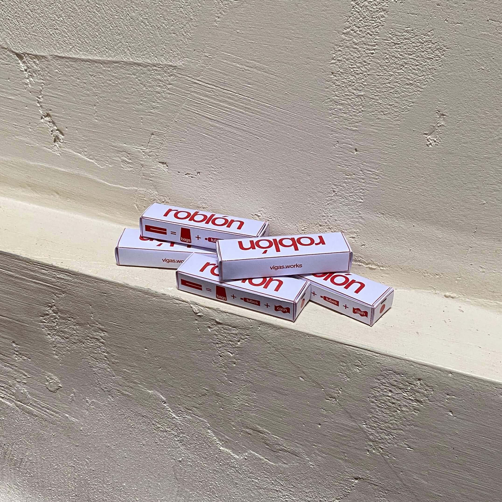
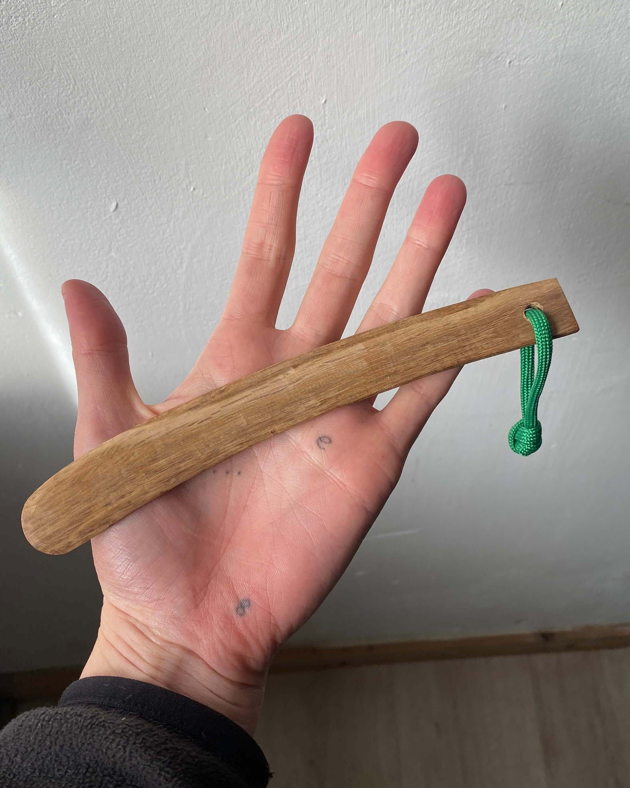
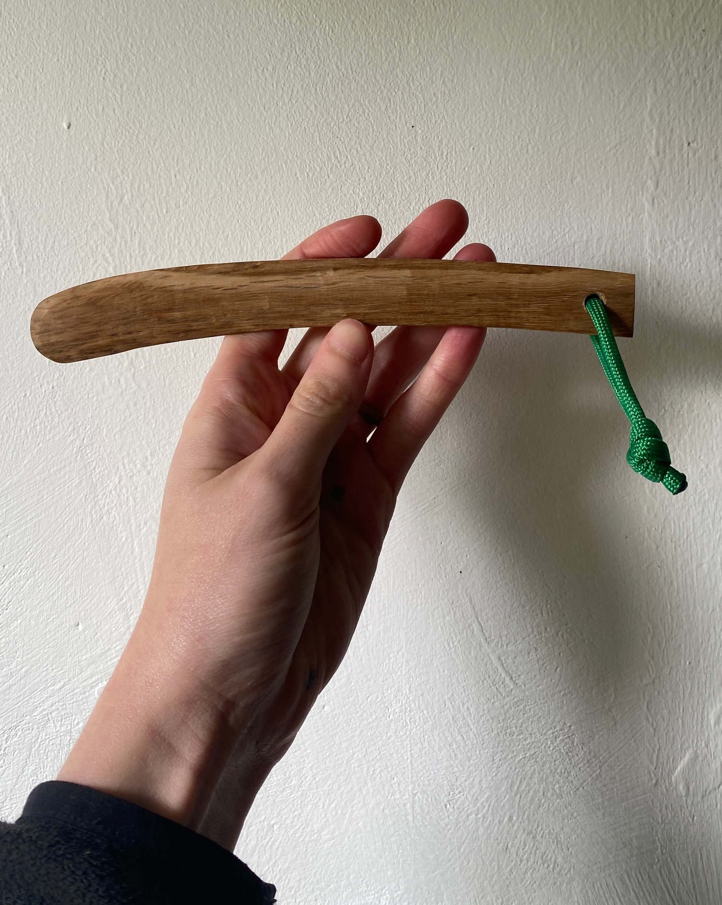
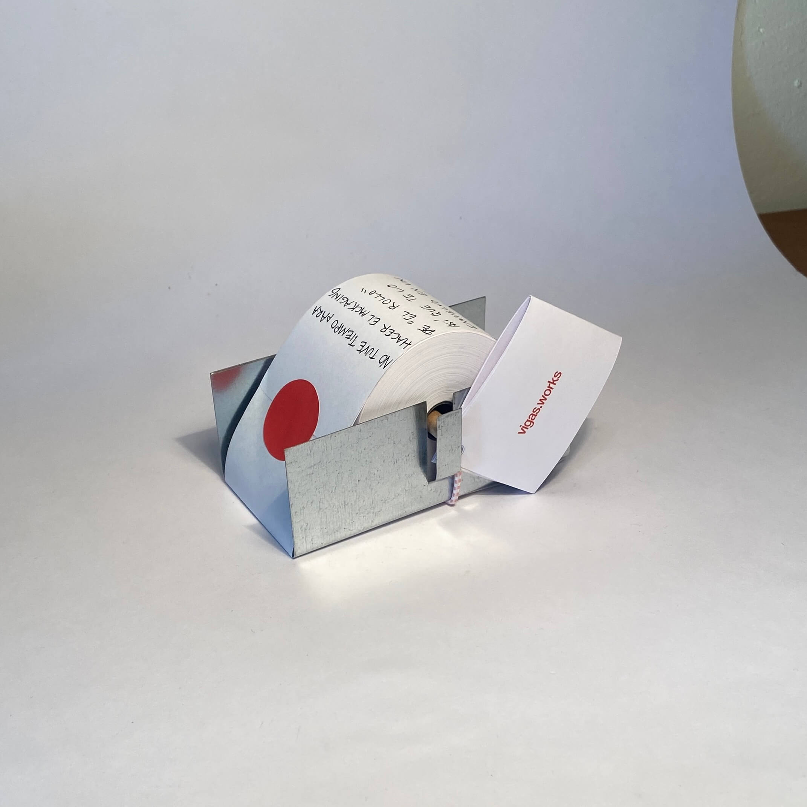
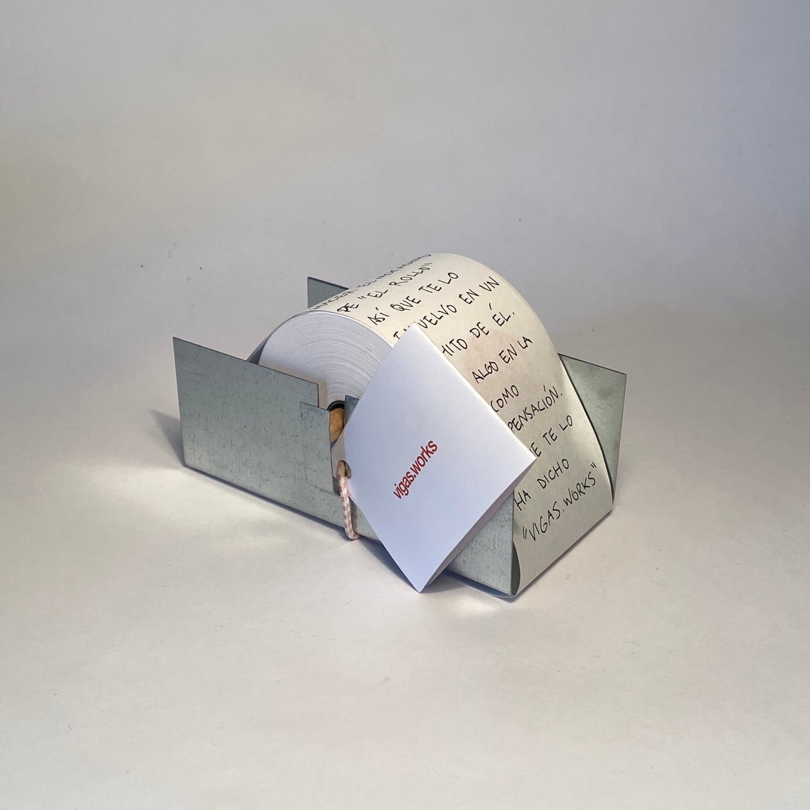
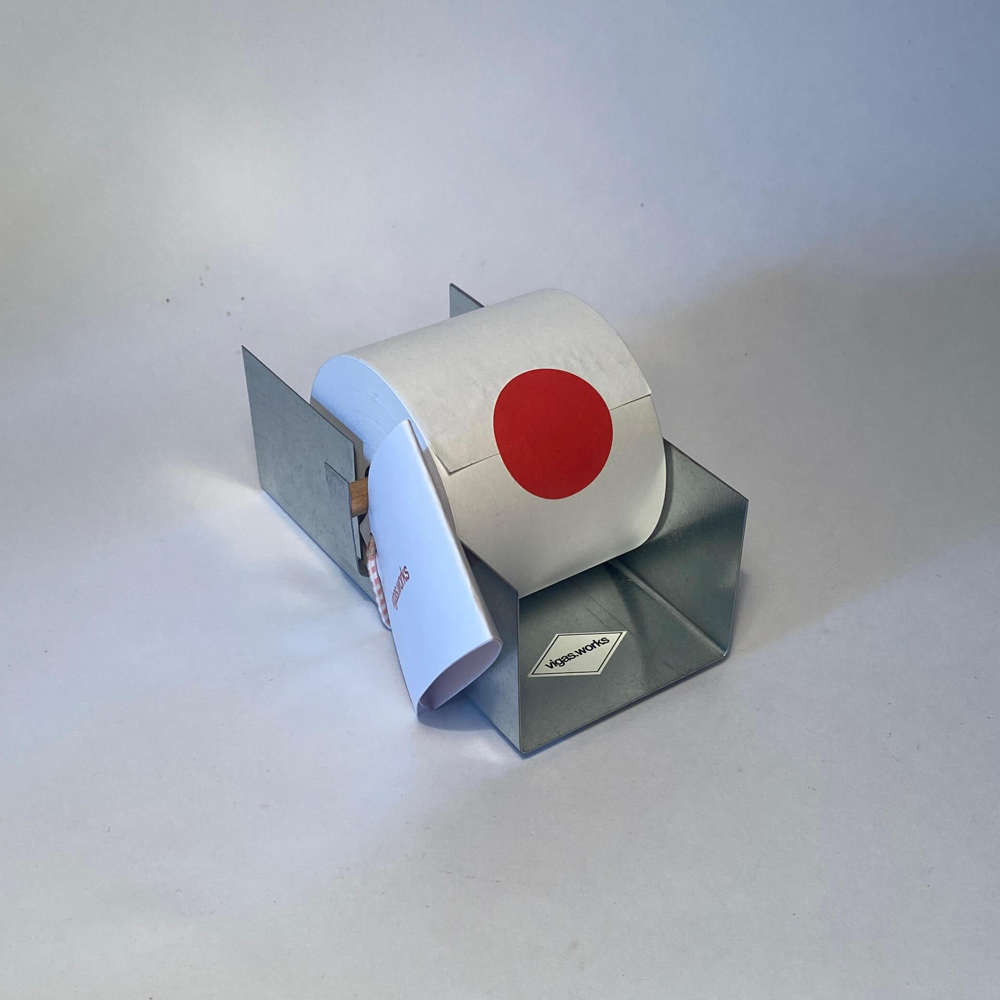
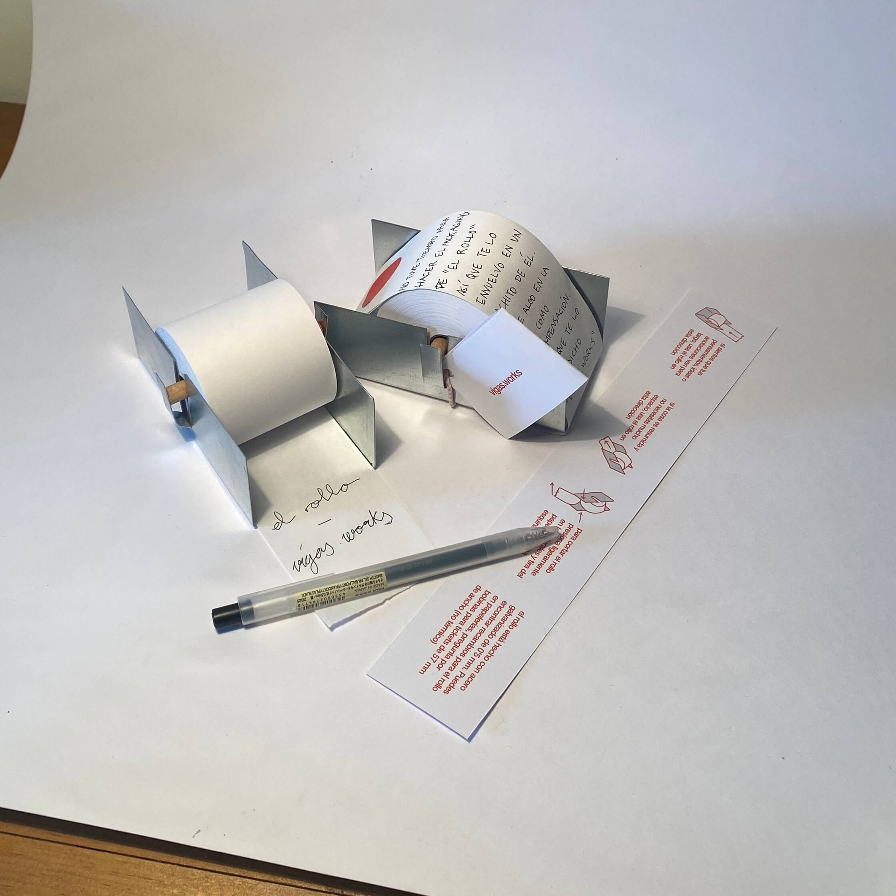

Hola María Rosa y Javier!
He decidido crear un apartado en mi web para vosotros ya que puedo incluir deferentes tipos de archivos aquí, a diferencia de en un PDF.
Un poco sobre el origen del nombre "vigas":
El nombre "vigas" viene de un símil entre la vida y la construcción. Así como en la construcción carece de sentido subir y subir (usando pilares) sin asentar horizontalmente (usando vigas), en la vida (en mi opinión) tampoco.
Tengo un par de lemas que siempre tengo presentes:
Making your day work. Creo objetos con función y utilidad, concebidos para ser usados, no una mera decoración. Objetos que pueden hacer que tu día "funcione".
Objects for the unordinary life. Nos rodeamos de objetos, de hecho, siempre tenemos objetos alrededor. ¿Por qué no hacer que destaquen? Ya sea gracias a su forma, a su color o función, incluso a su propia historia (la del material o el proceso de creación y fabricación).
Creo objetos con la premisa de que pueda fabricarlos yo mismo, principalmente con las herramientas y materiales que ya tengo a mi disposición. Prefiero hacerlo de esta manera que elegir el otro extremo (materiales que en mi entorno no están disponibles o fabricar en otra localización).
He pensado que tres objetos en concreto podrían ser de vuestro interés:
Roblón
Cada roblón está hecho de un trozo de roble de mi jardín (el butter knife mencionado más abajo también). Sirve para estrujar botes, cerrar paquetes y portar billetes. Cada uno está hecho a mano y empaquetado en una pequeña caja de cartón.

Botes

Paquetes

Dinero

Butter knife
Un "cuchillo" (entre comillas porque no corta) para untar. También hecho utilizando roble de mi jardín. Sé que en la tienda tenéis otros cuchillos para untar pero ninguno completamente de madera.
 
El rollo
El papel para notas sin limitación de espacio. Escribe la nota que quieras tan larga o corta como lo desees. El rollo está fabricado en acero galvanizado y madera de haya (el listón interior). Utiliza papel de impresora de tickets (no térmico) de 57 mm de ancho.
Para el packaging se me ocurrió jugar con el propio concepto del rollo y utilizar su papel como envoltorio. También incluye una etiqueta que cuando se abre descubre las instrucciones de uso del objeto.
   Por último, quiero agradecer vuestro tiempo, significa mucho para mí que toméis el tiempo para valorar esta propuesta.
Si esta propuesta os encaja de alguna manera, ¡hablemos!
Mi correo: j@vigasworks.com